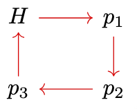

Continuos Encadenables
La idea de que un continuo sea encadenable o circularmente encadenable es que sea delgado y acotado, que pueda cubrirse con un número finito de abiertos de tal modo que sean tan pequeños como se necesite
Naturalmente, queremos que todo continuo homeomorfo al intervalo sea linealmente encadenable y también que todo continuo homeomorfo a \(S^1\) sea circularmente encadenable.
- Definición 1: Sea \(M\) un espacio topológico y sea \( C = \{U_{1}, \dots, U_{n}\}\) un conjunto de abiertos en \(M\). Diremos que \(C\) es una cadena lineal si se cumplen las siguientes condiciones:
- Para cada \(i \in \{1, \dots, n\}\) se tiene que existe algún abierto no vacío \(V\) de \(M\) tal que \(V \subseteq U_{i}\) y \(V \cap U_{j} = \emptyset\) para cada \(j \in \{1, \dots, n\}\setminus \{i\}\).
- Si \(|i - j|>1\), entonces \(\delta (U_{i}, U_{j}) > 0\).
- Si \(|i-j|\leq 1\), entonces \(U_{i} \cap U_{j}\neq \emptyset\).
- Definición 2: Sea \(M\) un espacio topológico y sea \(C = \{U_{1}, \dots, U_{n}\}\) un conjunto de abiertos en \(M\). Diremos que \(C\) es una cadena circular si \(C\) cumple con la Definición 1 y además \(U_{1} \cap U_{n}\neq \emptyset\).
- Definición 3: Sea \(C = \{U_{1}, \dots, U_{n}\} \) una cadena lineal o cadena circular, tendremos que \(C\) es una \(\varepsilon \text{-cadena lineal}\) si para cada \(i \in \{1, \dots, n\}\) se cumple \(diam(U_{i}) < \varepsilon\).
- Definición 4: Sea \(M\) un continuo, \(M\) es linealmente encadenable si para cada \(\varepsilon >0\), existe una \(\varepsilon \text{-cadena}\) tal que \( M \subseteq \bigcup C \).
Diremos que un continuo es es encadenable, si es circularmente encadenable o linealmente encadenable. Nos referimos por eslabón a un elemento de la cadena. Un resultado básico sobre continuos nos asegura que todo subcontinuo de un continuo encadenable, es encadenable.
En esta sección demostraremos daremos un ejemplo de un continuo que no es encadenable, el triodo. Y además, podremos concluir que todo continuo que tenga al triodo como subcontinuo no es encadenable, lo que nos da muchos ejemplos de continuos no encadenables.
Comenzaremos con definiciones:
Definición: Sea \(M\) un continuo, y \(G\subseteq \mathcal{P} (M)\) decimos que \(M\) es la suma esencial de elementos de \(G\) si para cada \(x \in G\), se cumple que \(x\not\subseteq \bigcup( G \setminus \{x\})\) y \(\bigcup G =M\).
Definición: Sea \(M\) un continuo, \(M\) es un triodo si \(M\) es la suma esencial de tres continuos \(M_{1}, M_{2} \text{ y } M_{3}\) y además se tiene que:
- Si \(i,j \in \{1,2,3\}\) tal que \(i\neq j\), se tiene que \(M_{1}\cap M_{2} \cap M_{3} = M_{i} \cap M_{j} \) .
- El conjunto \(M_{1}\cap M_{2} \cap M_{3} \) es un continuo.
Teorema: Si \(M\) es encadenable o cirularmente encadenable y \(N\) es un subcontinuo de \(M\), entonces \(N\) no es triodo.
Demostración:
Basta probar que \(M\) no es un triodo
Supongamos que \(M\) es un triodo, por definicón \(M\) es igual a la suma esencial de los subcontinuos \(M_{1}\), \(M_{2}\) y \(M_{3}\). Así, existe algún \(p_{i}\in M_{i} \) para cada \(i \in \{1,2,3\}\) tal que \(p_{i}\) no es elemento de los otros dos continuos.
Definimos:
$$\varepsilon< \text{mín}\{\delta (p_{1}, M_{2}+M_{3}), \text{ } \delta (p_{2}, M_{1}+M_{3}),\text{ } \delta (p_{3}, M_{1}+M_{2})\} $$
Por hipótesis tenemos que existe alguna \(\varepsilon\text{-cadena}\) que denotaremos por \(C\). Dada la definición de \(\varepsilon\), tenemos que el eslabón \(P_i\) que tiene como elemento a \(p_{i}\) se queda completamente contenido en \(M_{i}\). Nombremos \(H = M_1 \cap M_2 \cap M_3\).
Caso 1: \(M\) es circularmente encadenable. Sin pérdida de generalidad, asumiremos que la cadena recorre \(H,p_1,p_2\) y \(p_3\) en ese orden, tal y como se muestra en la figura \eqref{esquematriodo}. Si quitamos de la cadena a los eslabones \(P_1\) y \(P_3\), estamos indicando que \(M_2\) no es conexo, contradiciendo que \(M_2\) es un continuo.
Caso 2: \(M\) es encadenable. Observamos que indistintamente del orden con que la cadena recorra a \(p_1,p_2, p_3\) y \(H\), tendremos que \(H\) tiene algún \(p_j\in \{p_1,p_2, p_3\}\) adyacente en cuanto al orden de la cadena tal que existe algún \(p_k \in \{p_1,p_2, p_3\}\) es adyacente a \(p_j\). Por ejemplo, la Figura \eqref{esquematriodo2} muestra un caso particular donde \(p_j=p_1\) y \(p_k=p_2\).
De esta manera, al remover al eslabón \(P_j\) de la cadena, podemos deducir que \(M_k\) no es conexo. Por lo tanto \(M\) no es encadenable.
Sea \(M\) un continuo, diremos que \(M\) es unicoherente si para cada par \(M_{1}\), \(M_{2}\) de subcontinuos de \(M\) tales que \(M_{1} \cup M_{2}=M\), se cumple que \(M_{1}\cap M_{2}\) es un continuo.
El siguiente lema lo demostró la doctora Cristina Villanueva con la finalidad de probar que todo continuo linealmente encadenable es unicoherente sin utilizar límites inversos.
Lema: Sea \(X\) un continuo, todo subconjunto cerrado de \(X\) linealmente encadenable es conexo.
Demostración: Sea \(F\subseteq X\) un cerrado linealmente encadenable. Asumiremos que \(F\) no es conexo, por tanto existen \(U,V\)abiertos en \(X\) que intersecan a \(F\) en un subconjunto no vacío, que cumplen que \(U\cap F \cap V= \emptyset \) y que \(F \subseteq U\cup V \).
Como \(F\) es linealmente encadenable, podemos tomar una sucesión de cadenas \(\{\textit{C}_n: n \in \mathbb{N}\}\) que cubren a \(F\), tal que para cada \(n\in \mathbb{N}\), se cumpla que \(C_n\) sea una \(\frac{1}{n}\text{-cadena}\) y \(C_{n+1}\) sea un refinamiento de \(C_n\). Así \(F= \bigcap\limits_{n \in \mathbb{N}}(\bigcup \textit{C}_n)\).
Veremos que existe \(n_0\) tal que \(\bigcup C_{n_0}\subseteq U \cup V\). Supongamos lo contrario, entonces para cada \(n \in \mathbb{N}\) podemos tomar un punto
$$x_0 \in \bigcup \textit{C}_n \cap (X \setminus (U \cup V)).$$
Sea \(x_0\) un punto de acumulación de \(x_n:n \in \mathbb{N}\). Si \(x_0\notin F\), entonces cualquier \(n > N:=1/2\delta(x_0, F)\) se tiene que \(B_{\frac{1}{N}}(x_0)\cap \bigcup \textit{C}_n = \emptyset\), esto implica que que \(x_0\) no es punto de acumulación de la sucesión \(\{x_n\}_{n\in \mathbb{N}}\). De esta manera \(x_0 \in F\), a su vez, como \(X \setminus (U \cup V)\) es un conjunto cerrado y \(\{x_n\}_{n \in \mathbb{N}} \subseteq X\setminus (U \cup V)\) es una sucesión cuyo límite es \(x_0\), podemos inferir que \(x \in X\setminus(U \cup V) \subseteq X \setminus F\) lo cual es absurdo. Esto implica que existe \(n_0 \in \mathbb{N}\) tal que \(\bigcup \textit{C}_{n_0} \subseteq U\cup V\).
Por otro lado, notamos que \(\delta(F\cap U, V)>0\). Esto indica que existe alguna \(m \in \mathbb{N}\) tal que
$$1/m< \delta(F\cap U, V) \text{ y que } C_m \subseteq U\cup V$$.
Consideremos ahora a la cadena \(\textit{C}_m\), notamos que su primer elemento \(L_1\), al tener longitud menor o igual a \(1/m\), satisface que \(L_1 \cap U = \emptyset\) o bien, que \(L_1 \cap V = \emptyset \). Si \(L_1 \cap V= \emptyset\), tendremos como consecuencia de que \(L_1\cap L_2\neq \emptyset\) y de que la longitud de \(L_2\) es menor o igual a \(1/m\) que \(L_2 \cap V = \emptyset\). De manera inductiva obtendremos para cada elemento \(L\) en \(\textit{C}_m\) que \(L \cap V = \emptyset\), por lo cual \(\textit{C}_m\) no cubre a \(F\), lo cual es contradictorio a la definición de cadena.
Así, \(F\) es conexo.
Todo continuo linealmente encadenable es unicoherente.
Sea \(M\) un continuo linealmente encadenable. Supongamos que \(M\) no es unicoherente, es decir, que existen dos subcontinuos \(M_1, M_2\) de \(M\) de forma que \(F :=M_1 \cap M_2\) no es conexo.
Dada una cadena $\textit{C}$ que cubre a $M$, consideremos los siguientes índices:
$$i_*(\textit{C})= \text{mín}\{i\in \mathbb{N}: L_i \in \textit{C} \land L_i\cap \textit{C}\neq \emptyset\}$$
y
$$i^*(\textit{C})= \text{máx}\{i\in \mathbb{N}: L_i \in \textit{C} \land L_i\cap \textit{C}\neq \emptyset\}.$$
Denotaremos por \(\textit{C}^ *\) y \(\textit{C}^{**}\) a las subcadenas dadas por
$$\textit{C}^* = \{L_i:i^*(\textit{C}) \leq i \leq i^{**}(\textit{C})\}$$
y
$$\textit{C}^{**} = \{L_i:i^*(\textit{C}) < i < i^{**}(\textit{C})\}.$$
Asumiremos las siguientes condiciones:
- \(\textit{C}^{**} = \emptyset\)
- \(\textit{C}^{**}\neq \emptyset\)y para cada eslabón \(L\) en \(\textit{C}^{**}\) se cumple que \(L\cap M_1 \neq \emptyset\) y \(L \cap M_2 \neq \emptyset\).
Si todas las cadenas \(\textit{C}^{**}\) son vacías, entonces \(F\) es un conjunto unitario, que sí es un continuo. Consideremos por tanto que a partir de alguna refinación \(C_n^{**}\) es una subcadena no vacía.
Sea \(\{\textit{C}_n\}_ {n\in \mathbb{N}}\) una sucesión de cadenas que cubren a \(M\), tal que para cada \(n \in \mathbb{N}\), se tenga que \(\textit{C}_n\) es una \(\frac{1}{n}\text{-cadena}\) y que \(\textit{C}_{n+1}\) refina a \(\textit{C}_n\). Observamos que \(F \subseteq \bigcap \limits_{n \in \mathbb{N}}(\bigcup \textit{C}_n^{*} )\). A continuación se probará la otra contención.
Sea \(x\in \bigcap \limits_{n \in \mathbb{N}}(\bigcup \textit{C}_n^{*} )\) y sea \(r>0\), notamos que si \(n> 1/r\) tendremos que cada elemento de \(\textit{C}_n\) tendrá elementos de \(M_1\) y de \(M_2\), en particular el eslabón que tenga a \(x\) como elemento, que además se se queda contenido en \(B_r(x)\). De esta manera \(x\) es punto de acumulación de \(M_1\) y de \(M_2\), debido a que ambos cunjuntos son cerrados, concluimos que \(x \in F\). Así, \(\bigcap \limits_{n \in \mathbb{N}}(\bigcup \textit{C}_n^{*} )\subseteq F\).
De esta manera, bajo nuestras suposiciones, resulta que \(F\) es linealmente encadenable, como además es cerrado, el lema previo asegura que \(F\) es conexo, lo que contradice la hipótesis.
Por lo tanto existe alguna cadena \(\textit{C}\) que cubre a \(M\) de tal manera que existe algún eslabón \(L_k\) de la subcadena no vacía \(\textit{C} ^{**}\) tal que \(L_k \cap M_1 = \emptyset\) o bien \(L_k \cap M_2 = \emptyset\).
Sin pérdida de generalidad, supongamos que \(L_k \cap M_1 = \emptyset\). notamos que \(\textit{C}\setminus L_k\) cubre a \(M_2\). Es decir:
$$M_2 \subseteq \bigcup \limits_{i = 1}^{k-1} \textit{C}_i \cup \bigcup \limits_{i = k+1}^{n} \textit{C}_i.$$
Esto implica que \(M_2\) es inconexo y por tanto, no es un continuo.
Como consecuencia de la contradicción anterior, se deduce que \(F\) es conexo, y así \(M\) es unicoherente.